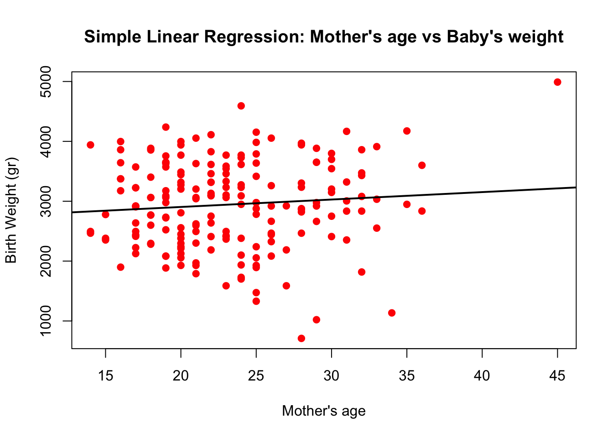
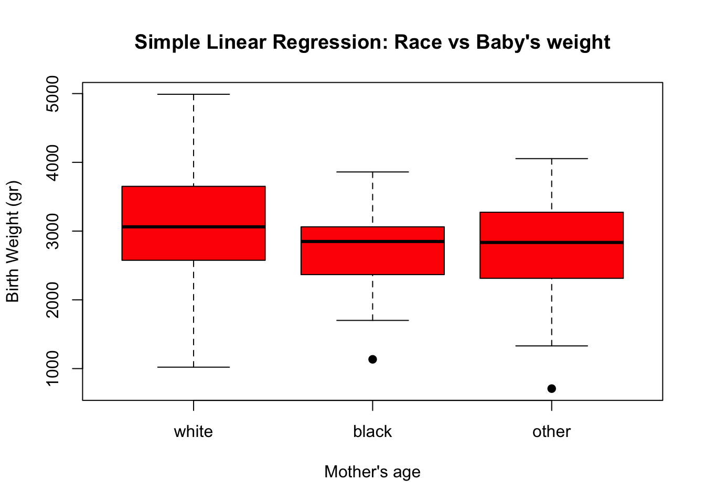
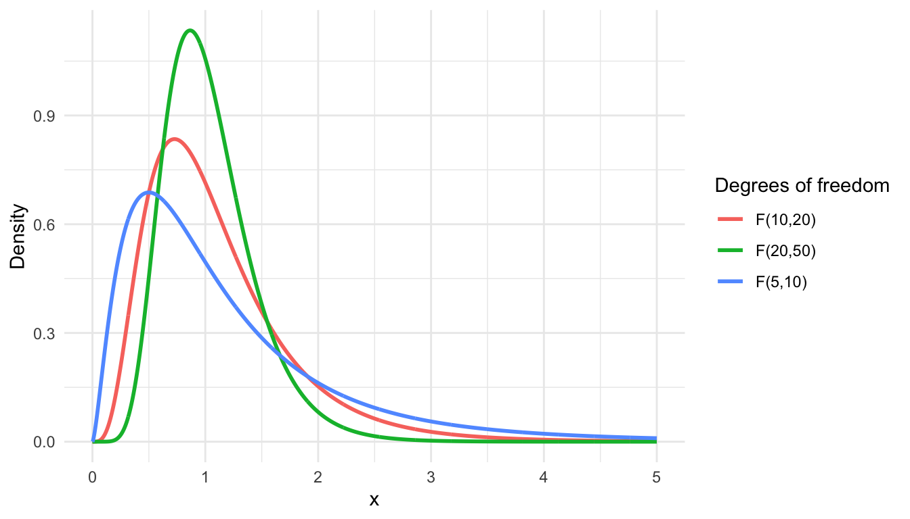

Once we have assessed the accuracy of the parameter estimates and rejected the null hypothesis, in favor of the alternative, we now evaluate how well the model fits the data. In linear regression, this is typically assessed using two indicators: the residual standard error (RSE) and the \(R^2\) statistic, or coefficient of determination.
The RSE, defined earlier is an estimate ofthe standard deviation of \(\epsilon\), it measures the average amount by which the response deviates from the true regression line, and is calculated as:
library(MASS)model1 <-lm(Hwt ~ Bwt, data = cats)summary(model1)
Call:
lm(formula = Hwt ~ Bwt, data = cats)
Residuals:
Min 1Q Median 3Q Max
-3.5694 -0.9634 -0.0921 1.0426 5.1238
Coefficients:
Estimate Std. Error t value Pr(>|t|)
(Intercept) -0.3567 0.6923 -0.515 0.607
Bwt 4.0341 0.2503 16.119 <2e-16 ***
---
Signif. codes: 0 '***' 0.001 '**' 0.01 '*' 0.05 '.' 0.1 ' ' 1
Residual standard error: 1.452 on 142 degrees of freedom
Multiple R-squared: 0.6466, Adjusted R-squared: 0.6441
F-statistic: 259.8 on 1 and 142 DF, p-value: < 2.2e-16
the residual standard error RSE was 1.452g, indicating that predictions typically deviate from the regression line by about 1.452 grams.
Whether a given RSE value is acceptable depends entirely on the context and the units of the response.
The RSE is therefore considered a measure of the lack of fit of the model: if the predicted values are close to the observed values (\(\hat{y}_{i}\approx y_{i}, i=1,\dots,n\)), the RSE will be small, indicating a good fit; conversely, if they are far apart, the RSE will be large, indicating a poor fit.
Because the residual standard error RSE is an absolute measure that depends on the units of \(Y\), it can be difficult to interpret in isolation.
The \(R^{2}\) statistic provides a complementary measure of fit that is unit-free. It takes the form of a proportion — the proportion of variance in \(Y\) explained by \(X\) — and always lies between 0 and 1, making it more straightforward to interpret. It is calculated as:
where \(TSS=\sum_{i=1}^{n}(y_{i}-\bar{y})^2\) is the total sum of squares and RSS is the residual sum of squares (as defined earlier). TSS measures the total variance in the response \(Y\) before regression is performed. In contrast, RSS is the amount of variation left unexplained after fitting the regression model. Therefore, \(TSS - RSS\) measures the variability in \(Y\) explained by the regression, and \(R^2\) measures the proportion of variance in\(Y\) explained by \(X\).
An equivalent definition is \[
R^2=\frac{\sum(\hat{y}_{i}-\bar{y})^2}{\sum(y_{i}-\bar{y})^2}=cor^2(\hat{y},y)
\]
An \(R^2\) close to 1 indicates that a large proportion of the variability in the response is explained by the model; conversely, an \(R^2\) close to 0 indicates that the model explains little of the variability in the response.
In the cats example, \(R^2 = 0.64\), meaning that 64% of the total variability in heart weight is explained by body weight.
While \(R^2\) is generally easier to interpret than the RSE, determining what constitutes a good value is still context-dependent. A value of \(R^2 = 1\), for instance, rather than indicating a perfect fit, should raise concern about possible overfitting. Caution is therefore always advised when interpreting these indicators.
19.1 Multiple Linear Regression
Simple linear regression is a useful approach for predicting a response based on a single predictor. However, most practical applications involve more than one predictor.
NoteExample: Newborn’s Birth Weight
Here we are interested in examining whether maternal characteristics or behaviors during pregnancy are associated with infant birth weight. The response variable \(Y\) is the birth weight of the baby, and the predictors \(X\) are those variables potentially related to that outcome.
The birthwt dataset in the MASS package contains 189 observations collected at Baystate Medical Center, Springfield, Massachusetts in 1986.
Simple regression of baby’s birth weight on Mother’s Age
Call:
lm(formula = bwt ~ age, data = birthwt)
Residuals:
Min 1Q Median 3Q Max
-2294.78 -517.63 10.51 530.80 1774.92
Coefficients:
Estimate Std. Error t value Pr(>|t|)
(Intercept) 2655.74 238.86 11.12 <2e-16 ***
age 12.43 10.02 1.24 0.216
---
Signif. codes: 0 '***' 0.001 '**' 0.01 '*' 0.05 '.' 0.1 ' ' 1
Residual standard error: 728.2 on 187 degrees of freedom
Multiple R-squared: 0.008157, Adjusted R-squared: 0.002853
F-statistic: 1.538 on 1 and 187 DF, p-value: 0.2165
plot(birthwt$age, birthwt$bwt,col ="red", pch =19,xlab ="Mother's age",ylab ="Birth Weight (gr)",main ="Simple Linear Regression: Mother's age vs Baby's weight")# Fitted lineabline(model2, col ="black", lwd =2)

Simple regression of baby’s birth weight on Mother’s Race
Call:
lm(formula = bwt ~ race, data = birthwt)
Residuals:
Min 1Q Median 3Q Max
-2096.28 -502.72 -12.72 526.28 1887.28
Coefficients:
Estimate Std. Error t value Pr(>|t|)
(Intercept) 3102.72 72.92 42.548 < 2e-16 ***
raceblack -383.03 157.96 -2.425 0.01627 *
raceother -297.44 113.74 -2.615 0.00965 **
---
Signif. codes: 0 '***' 0.001 '**' 0.01 '*' 0.05 '.' 0.1 ' ' 1
Residual standard error: 714.5 on 186 degrees of freedom
Multiple R-squared: 0.05017, Adjusted R-squared: 0.03996
F-statistic: 4.913 on 2 and 186 DF, p-value: 0.008336
plot(birthwt$race, birthwt$bwt,col ="red", pch =19,xlab ="Mother's age",ylab ="Birth Weight (gr)",main ="Simple Linear Regression: Race vs Baby's weight")

We now have a categorical variable with 3 possible values: white, black and other. When a binary (2 categories) or categorical (3+ categories) variable is included in a regression model, it must first be converted into dummy variables (also called indicator variables). For a binary variable such as smoke (0/1), the coefficient represents the mean difference in the response between the two groups. For categorical variables with three or more categories, one category is chosen as the reference level and k−1 dummy variables are created for the remaining categories. For example, for race with levels white, black, and other, white serves as the reference category.
For race, we can interpret our model as having 2 predictors corresponding to indicator variables (black and other). - One category is the reference (baseline) level (white in the example). - The intercept is the mean bwd for the reference race. - Each coefficient for the other two races is the difference in mean bwt compared to the reference race.
The fitted means are: - Reference mean: \(\beta_{0}\). - Race black: \(\beta_{0}+\beta_{1}\) - Race other: \(\beta_{0}+\beta_{2}\)
Simple regression of baby’s birth weight on Mother’s Smoking
Call:
lm(formula = bwt ~ smoke, data = birthwt)
Residuals:
Min 1Q Median 3Q Max
-2062.9 -475.9 34.3 545.1 1934.3
Coefficients:
Estimate Std. Error t value Pr(>|t|)
(Intercept) 3055.70 66.93 45.653 < 2e-16 ***
smoke -283.78 106.97 -2.653 0.00867 **
---
Signif. codes: 0 '***' 0.001 '**' 0.01 '*' 0.05 '.' 0.1 ' ' 1
Residual standard error: 717.8 on 187 degrees of freedom
Multiple R-squared: 0.03627, Adjusted R-squared: 0.03112
F-statistic: 7.038 on 1 and 187 DF, p-value: 0.008667
In this example, we added one predictor at a time and found no association between mother’s age and infant birth weight. However, birth weight was significantly associated with both race and smoking status.
Examining the results, mother’s age is not significantly associated with birth weight (\(p = 0.216\)). Compared to infants born to white mothers, those born to Black mothers had a significantly lower mean birth weight of 383.03 grams (\(p < 0.05\)), and those born to mothers of other races had a significantly lower mean birth weight of 297.44 grams (\(p < 0.05\)). Regarding smoking, infants born to mothers who smoked during pregnancy had a significantly lower mean birth weight of 283.78 grams compared to infants of non-smoking mothers (\(p < 0.05\)).
Although these results are illustrative, fitting a separate simple linear regression model for each predictor is not entirely satisfactory. First, since both race and smoking are significantly associated with birth weight, it is unclear how to construct a precise prediction of birth weight from these individual models. Second, each model ignores the other predictors when estimating regression coefficients. A related concern is that if predictors are correlated with one another, the individual models may yield misleading estimates of each predictor’s association with birth weight.
A better approach is to extend the simple linear regression model to directly accommodate multiple predictors by assigning each predictor its own slope coefficient within a single model. In general, suppose we have \(m\) distinct predictors. The multiple linear regression model then takes the form:
where \(X_{j}\) represents the \(j\)th predictor and \(\beta_{j}\) quantifies the association between that variable and the response. We interpret \(\beta_{j}\) as the average effect on \(Y\) of a one-unit increase in \(X_{j}\), holding all other predictors fixed.
19.1.1 Estimating the Regression Coefficients
As in the case of simple regression, the coefficients \(\beta_{1}, \beta_{2}, \dots, \beta_{m}\) are unknown and must be estimated. Given those estimates, we can make predictions for the outcome, as follows:
The parameters are estimated using the same least squares approach as in simple regression – that is, we choose the values of each \(\beta\) that minimize the residual sum of squares:
The values \(\hat{\beta}_{1}, \hat{\beta}_{2}, \dots, \hat{\beta}_{m}\) that minimize Equation 19.1 are the multiple least squares regression coefficients. Unlike the simple regression case, however, these coefficients have somewhat complex closed-form expressions that are most naturally represented using matrix notation. For simplicity, we omit the derivation here; in practice, any statistical software can estimate these coefficients from data. In the next example we use R to fit a multiple regression model using birth weight data.
Note
Example: Multiple regression We are interested in regressing newborns’ birth weight on mother’s age, race, and smoking status during pregnancy.
library(MASS)model5 <-lm(bwt ~ age + race + smoke, data = birthwt)summary(model5)
Call:
lm(formula = bwt ~ age + race + smoke, data = birthwt)
Residuals:
Min 1Q Median 3Q Max
-2322.6 -447.3 28.4 502.2 1612.3
Coefficients:
Estimate Std. Error t value Pr(>|t|)
(Intercept) 3281.673 260.664 12.590 < 2e-16 ***
age 2.134 9.771 0.218 0.827326
raceblack -444.069 156.194 -2.843 0.004973 **
raceother -447.858 119.017 -3.763 0.000226 ***
smoke -426.093 109.988 -3.874 0.000149 ***
---
Signif. codes: 0 '***' 0.001 '**' 0.01 '*' 0.05 '.' 0.1 ' ' 1
Residual standard error: 690 on 184 degrees of freedom
Multiple R-squared: 0.1236, Adjusted R-squared: 0.1046
F-statistic: 6.49 on 4 and 184 DF, p-value: 6.592e-05
Table. Number of mothers by smoking status
Warning: package 'polycor' was built under R version 4.4.3
0 1
white 44 52
black 16 10
other 55 12
Notice that in the multiple regression model, race and smoking remain statistically significant, and their coefficients are larger in absolute terms (now -444.069, -447.858, and -426.093, respectively) compared to those from the simple linear regression models. Fitting separate simple linear regression models for each predictor, we found that race and smoking were significantly associated with birth weight, while mother’s age was not. However, when all predictors were included simultaneously, the effects of race and smoking became larger in magnitude.
This occurs because of confounding: in the simple models, the effect of each predictor was partially diluted by its correlation with the others. For example, although white mothers smoked more frequently than Black mothers in this sample (54% vs. 38%, see Table above), babies born to Black mothers still had significantly lower birth weights even after controlling for smoking. This suggests that race has an independent effect on birth weight beyond what can be explained by smoking differences, likely reflecting unmeasured socioeconomic or biological factors. More broadly, this example highlights why fitting separate simple regression models is inadequate when predictors are correlated — the coefficients from simple models can be misleading, and only multiple regression allows us to isolate the effect of each predictor while holding the others constant.
19.1.2 Additional Considerations in Multiple Regression
19.1.2.1 Is There an Association Between the Response and the Predictors?
In simple linear regression, we showed that we can test whether the coefficient of the linear predictor differs significantly from zero. We did this in Equation 18.5 by testing the null hypothesis that the coefficient equals zero against the alternative that it does not. In the multiple regression setting with \(m\) predictors, we proceed similarly, but now we must ask whether the coefficients of all predictors are simultaneously equal to zero; i.e., \(\beta_{1}=\beta_{2}=\ldots=\beta_{m}=0\).
The hypothesis test becomes:
\[\begin{align}
H_{0} &: \beta_{1}=\beta_{2}=\dots=\beta_{m}=0 \\
&\text{versus} \\
H_{a} &: \text{At least one } \beta_{j} \text{ is non-zero}
\end{align} \tag{19.2}\]
This hypothesis test is performed by computing the F-statistic which has an F-distribution with \(m-1\) and \(n-m\) degrees of freedom. The statistic is
\[F=\frac{(TSS-RSS)/m}{RSS/(n-m-1)},\] where, as in the case of simple linear regression, \(TSS=\sum(y_{i}-\bar{y})^2\) and \(RSS=\sum(y_{i}-\hat{y}_{i})^2\).
Hence, when there is no relationship between the response and the predictors, one would expect the F-statistic to take a value close to 1. On the other hand, if \(H_{1}\) is true, then \(E\{(TSS-RSS)/m\}>\sigma^2\), so we expect \(F\) to be greater than 1.
library(ggplot2)
Warning: package 'ggplot2' was built under R version 4.4.3
# Choose three (df1, df2) pairsdfs <-data.frame(df1 =c(5, 10, 20),df2 =c(10, 20, 50),grp =c("F(5,10)", "F(10,20)", "F(20,50)"))# x-grid (adjust if needed)x <-seq(0, 5, length.out =2000)# Build data for plottingplot_df <-do.call(rbind, lapply(seq_len(nrow(dfs)), function(i) {data.frame(x = x,y =df(x, df1 = dfs$df1[i], df2 = dfs$df2[i]),grp = dfs$grp[i] )}))ggplot(plot_df, aes(x = x, y = y, color = grp)) +geom_line(linewidth =1) +labs(x ="x", y ="Density", color ="Degrees of freedom") +theme_minimal()

In the previous multiple regression example, the F-statistic was 6.49 on 4 and 184 degrees of freedom, which is significantly larger than 1 (\(p\)-value \(< 0.01\)). Compare this with the value obtained by fitting the model with age as the sole predictor, where the F-statistic was 1.538 on 1 and 187 degrees of freedom — barely larger than 1 and therefore not statistically significant (\(p\)-value \(= 0.2165\)). This last result implies that a model with mother’s age as the only predictor fails to explain the variation in birth weight.
The F-statistic approach for testing any association between the predictors and the response works well when \(m\) is relatively small, and certainly smaller than \(n\). However, when the number of predictors is large and \(m > n\), there are more coefficients \(\beta_{j}\) to estimate than observations available to estimate them. In this case, the multiple linear regression model cannot be fit using least squares, and therefore the F-statistic cannot be used. When \(m\) is too large, alternative approaches are required, such as forward selection, which we discuss in the next section.
19.1.2.2 Selecting predictors
The previous lecture discusses how to test whether a set of predictor variables is associated with the response variable. It provides the F-statistic to test whether at least one of the potential predictors is associated with the outcome. However, not all of those predictors are necessarily significantly associated, as we can assess using the individual p-values for each of them — as discussed earlier for the simple regression model — but if the number of predictors \(m\) is large, we are likely to make some false discoveries.
It is possible that all predictors are associated with the response variable, but it is more common to find that only a subset of them is associated. We refer to variable selection as the process of identifying the predictors that are truly associated with the response variable. Since a more extensive discussion of this topic is needed, we introduce it only briefly here.
Ideally, we would perform variable selection by testing all possible combinations of variables in a model. For instance, for a model with two predictors \(X_{1}\) and \(X_{2}\), we would need to test 4 different models: a model with no variables, a model with \(X_{1}\) only, a model with \(X_{2}\) only, and a model with both \(X_{1}\) and \(X_{2}\). We then select the best model according to some statistical criterion. Various statistics can be used to judge the quality of a model, including Mallow’s\(C_p\), the Akaike information criterion (AIC), the Bayesian information criterion (BIC), and the adjusted \(R^2\).
Unfortunately, for a large number of predictors, testing every possible subset model is prohibitively expensive computationally, because there are \(2^m\) possible models containing subsets of \(m\) variables — even for a relatively small number of predictors. In the simple case above with \(m = 2\), we had \(2^2 = 4\) models to consider, but for \(m = 10\) we would need to consider \(2^{10} = 1{,}024\) models, and the number grows exponentially as \(m\) increases. Since exhaustive search is impractical, several approaches have been developed to address this:
Forward selection. Start with a null model containing only an intercept and no predictors. Then fit \(m\) simple linear regressions and add to the null model the variable that results in the lowest RSS. Next, add to that model the variable that results in the lowest RSS for the new two-variable model. This process continues until some stopping rule is satisfied.
Backward selection. Start with all \(m\) variables in the model and remove the variable with the largest p-value — that is, the variable that is least statistically significant. The new \((m-1)\)-variable model is fit, and the variable with the largest p-value is again removed. This process continues until a stopping rule is reached; for instance, we may stop when all remaining variables have a p-value below some threshold.
Mixed selection. This approach combines forward and backward selection. We start with no variables in the model and add them one by one, always choosing the variable that provides the best fit, as in forward selection. If at any point the p-value for one of the variables already in the model rises above a certain threshold, that variable is removed. We continue performing these forward and backward steps until all variables in the model have a sufficiently low p-value and all variables outside the model would have a large p-value if added.
Note that backward selection cannot be used when \(m > n\), whereas forward selection can always be applied. Forward selection is a greedy approach and may include variables early on that later become redundant; mixed selection can help remedy this.
19.1.2.3 Model fit
We saw earlier in the context of simple regression that two of the most common numerical measures of model fit are the RSE and the \(R^2\). Recall that \(R^2\) is the squared correlation between the response and the predictor variable. In multiple linear regression, it turns out that it equals the squared correlation between the response and the fitted values, \(\text{Cor}(Y, \hat{Y})^2\).
An \(R^2\) close to 1 indicates that the model explains a large proportion of the variation in the response variable. For example, for the simple linear models that include mother’s age, mother’s race, and mother’s smoking status during pregnancy, the respective \(R^2\) values are 0.008157, 0.05017, and 0.03627. These values are all far from 1, meaning that each individual predictor explains only a small fraction of the variation in birth weight — mother’s age in particular, whose \(R^2\) is closest to zero. However, once all three variables are included together in a multiple regression model, the \(R^2\) increases substantially to 0.1236, meaning that these variables jointly explain around 12% of the total variation in birth weight.
It turns out that adding variables to a multiple regression model always increases the \(R^2\), even when those variables are only weakly associated with the response. This is because adding a predictor always results in a decrease in the residual sum of squares on the training data, though not necessarily on the test data.
19.1.2.4 Predictions
Once we have fit the multiple regression model, it is straighforward to apply ?eq-10 in order to predict the response Y on the basis of a set of values for the predictors \(X_{1}, X_{1}, \dots, X_{m}\). In R we can estimate prediction from the model using the following code:
fitted_values <-predict(model5)
However, there are three sorts of uncertainty associated with this prediction:
The coefficient estimates \(\hat{\beta}_{0}, \hat{\beta}_{1}, \dots, \hat{\beta}_{m}\) are estimates for \(\beta_{0}, \beta_{1}, \dots, \beta_{m}\). Therefore, they are only estimates for the true population regression plane: \[f(X)=\beta_{0}+\beta_{1}X_{1}+\beta_{2}X_{2}+\dots+\beta_{m}X_{m}\] Therefore, we can estimate confidence intervals to evaluate how far is from \(f(X)\).
Using a linear model is of course only an approximation of the true surface, so this generates an error called model bias. However, for now we assume that a linear model is the correct approximation.
Regression can be used to predict \(Y\) for any given value of \(X\) lying between the smallest and largest observed values. Regression cannot be used to predict the value of \(Y\) when an \(X\) value lies well outside the observed range. We do not know whether the relationship in that range is even linear. Predicting \(Y\) for \(X\)-values beyond the range of the data is called extrapolation.